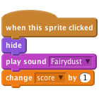

Ghostbusters
Level 1
This project is like the game Whack-a-Mole. You get points for hitting the ghosts that appear on the screen. The aim is to get as many points as possible in 30 seconds!

Choose sprite from library button to add a new ghoulNow we want to make our ghost move
Variable for this sprite only called speed.We want the ghost to start moving when the game starts, so make a script like this:
![when FLAG clicked
set [speed v] to [5]
forever
move (speed) steps](9f37d7c9b8ca8159515e9f4f64f87b90115006fb.png)
Click the green flag and see what your ghost does. Why does it get stuck on the edge of the screen?
To stop the ghost getting stuck we need to make her go back the other way when she touches the edge of the screen. Edit your existing script by adding an if on edge, bounce block below your movespeedsteps block.
![when FLAG clicked
set [speed v] to [5]
forever
move (speed) steps
if on edge, bounce](de6d5893af49898ddcf3dcbede358a305ec75a06.png)
To stop the ghost flipping upside down, click on the rotation style: left-right button in the Sprite Summary area.
Click the green flag.
Does the ghost move from side to side across the screen?
To make the game more fun, we want the ghost to appear and vanish randomly. We’ll do that with another script that runs at the same time as the one that moves the ghost. This new script needs to hide the ghost for a random time, then show it for a random time, and repeat that forever (or until the game finishes).
Create this script for the ghost:

Click the green flag.
Does the ghost move from side to side across the screen and vanish and appear again randomly?
To turn this into a game, we need to give the player something to do. They need to click on the ghost to make it disappear. When the ghost is clicked, we want it to disappear and play a sound.
In the Sounds tab, add a new sound Electronic/fairydust, using the Choose sound from library button.
Add this script to the ghost:
![when this sprite clicked
hide
play sound [Fairydust v]](fe619ea49051f6f231786fb881139d9fa2e591de.png)
Click the green flag.
Does the ghost disappear and play the sound when you click it?
We’ve got a ghost, but now we want to make a game! We want to score points every time we click on the ghost but we also want to have a time limit on the game. We can use a variable for the score and the timer.
Create a new Variable for all sprites called score, and alter the script for the ghost to increase this variable by one when it is clicked.

Switch to the Stage and create a new variable called timer. Add a new script that occurs when the green flag is clicked to set timer to 30 and reset the score to 0. Then use a repeat until block to wait a second and then reduce timer by
one. This should repeat until timer is 0, at which point use stop all to stop the game.
![when FLAG clicked
set [timer v] to (30)
set [score v] to (0)
repeat until <(timer) = [0]>
wait (1) secs
change [timer v] by (-1)
stop [all v]](1992e3969fe703da3ba8bf6c3b98a26340ae3a22.png)
Click the green flag.
If one ghost is good, more must be better! Let’s have three ghosts flying around.
Click the green flag.
Do you have three ghosts that move from side to side across the screen, randomly appear and disappear, and disappear when you click on them?
Well done you’ve finished, now you can enjoy the game!
Don’t forget you can share your game with all your friends and family by clicking on Share on the menu bar!